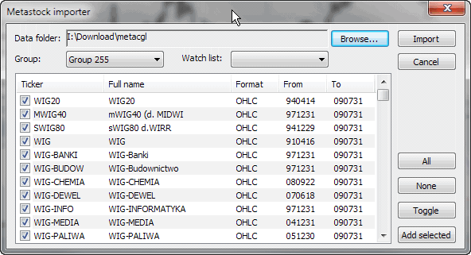

IMPORTANT NOTE: Metastock importer should be used ONLY if you want to import MS data to native, local AmiBroker database once. If you want AmiBroker to just read Metastock database DIRECTLY without the need to import new data over and over, please set up your database WITH THE METASTOCK PLUGIN, as described in the Tutorial.
NOTE 2: If you set up your database with the MS plugin, you should NOT use the Metastock importer, because there is no point in using it when your data is already fed by the plugin.

The Metastock importer opens AmiBroker to a very rich source of historical data. The importer supports both old Metastock 6.5 and new 7.x (XMASTER) formats.
Basically, Metastock data consist of:
The MASTER/EMASTER file is essential because it holds the references to Fxx.DAT files. Fxx.DAT files store only quotations in either 5-field (date/high/low/close/volume), 6- or 7-field (date/open/high/low/close/volume/openinterest) format. As you can see, MASTER/EMASTER and Fxx.DAT files are closely connected, and you need them all to import the data.
To import Metastock data, you should do the following: